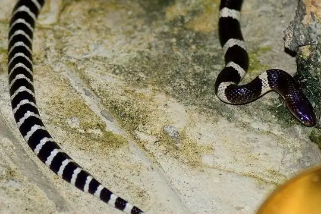

Snakes around Shenzhen
Guangdong, China · 22.55°N, 114.07°E
Shenzhen is a city in Guangdong, China. 77 snake species are recorded in Guangdong in SnakeList.
- 77species
- 19venomous
- 58non-venomous
- 10families
- 4found only here
These are the snakes of Guangdong, not of Shenzhen itself. SnakeList records snakes by state or province, not by city, so this page lists the 77 species recorded anywhere in Guangdong, the state or province Shenzhen is in (worked out from the city’s map position). Many of them may not live in or near the city.
Most widely recorded
The species here that have research-grade iNaturalist records in the most places across their whole range - not just in Guangdong. That shows how often people have photographed them, not how many live here.
 Oriental RatsnakePtyas mucosa
Oriental RatsnakePtyas mucosa Indo-Chinese Rat SnakePtyas korros
Indo-Chinese Rat SnakePtyas korros Buff Striped KeelbackAmphiesma stolatum
Buff Striped KeelbackAmphiesma stolatum Common Mock ViperPsammodynastes pulverulentus
Common Mock ViperPsammodynastes pulverulentus
Many-banded KraitBungarus multicinctus Brown Spotted PitviperProtobothrops mucrosquamatus
Brown Spotted PitviperProtobothrops mucrosquamatus Chinese Green Tree ViperTrimeresurus stejnegeri
Chinese Green Tree ViperTrimeresurus stejnegeri Greater Green SnakePtyas major
Greater Green SnakePtyas major
Venomous and non-venomous
Venomous: 19Non-venomous: 58
18 are listed by SnakeList as dangerous to people: Banded Krait Bungarus fasciatus, Brown Spotted Pitviper Protobothrops mucrosquamatus, Burmese Python Python bivittatus, Chinese Cobra Naja atra, Chinese Green Tree Viper Trimeresurus stejnegeri, Chinese Moccasin Deinagkistrodon acutus, Eastern Russel's Viper Daboia siamensis, Fea Viper Azemiops feae, Guangxi Coral Snake Sinomicrurus peinani, Horned Pit Viper Protobothrops cornutus, Kellog's Coral Snake Sinomicrurus kelloggi, King Cobra Ophiophagus hannah, Many-banded Krait Bungarus multicinctus, Mt. Mang Pitviper Protobothrops mangshanensis, Northern Red-necked Keelback Rhabdophis helleri, Taiwan Mountain Pitviper Ovophis makazayazaya, Tonkin pitviper Ovophis tonkinensis, White-lipped Pitviper Trimeresurus albolabris.
The other venomous ones have mild venom: no serious bites to people are documented for them.
Snake families
Found only here
Recorded in no other state or province or country in SnakeList’s data. That may mean it lives only here, but it can also mean it has not been recorded elsewhere yet.
- Lau's Mountain Stream Snake Opisthotropis laui
- Lingnan Reed Snake Calamaria arcana
- Shenzhen Mountain Stream Snake Opisthotropis shenzhenensis
- 张氏后棱蛇 Opisthotropis hungtai
Habitats (rough estimate)
How many of its living snakes have each kind of habitat in SnakeList’s estimate. That estimate comes from every country, state and province where each snake is recorded - not from a survey of Guangdong, and not checked species by species.
Who described them
The scientists who first described its most widely recorded snakes, and when.
- Oriental Ratsnake Ptyas mucosa -
- Indo-Chinese Rat Snake Ptyas korros -
- Buff Striped Keelback Amphiesma stolatum -
- Common Mock Viper Psammodynastes pulverulentus -
- Many-banded Krait Bungarus multicinctus -
- Brown Spotted Pitviper Protobothrops mucrosquamatus -
- Chinese Green Tree Viper Trimeresurus stejnegeri -
- Greater Green Snake Ptyas major -
Names and dates come from SnakeList’s reviewed species accounts; the others are looked up on Wikidata (CC0) when this page opens.
Nearby cities
The closest cities in SnakeList’s city list, as the crow flies.
Other cities in Guangdong
All 77 species of Guangdong
- Anderson's Mountain Keelback Opisthotropis andersonii
- Ashy Kukri Snake Oligodon cinereus
- Asiatic Water Snake Trimerodytes aequifasciatus
- Assam Kukri Snake Oligodon catenatus
- Bamboo Snake Pseudoxenodon bambusicola
- Banded Krait Bungarus fasciatus venomous
- Bella Rat Snake Archelaphe bella
- Bennett's Mud Snake Myrrophis bennettii
- Big-tooth Snake Lycodon flavozonatus
- Black-striped Rat Snake Ptyas dhumnades
- Boulenger's Keelback Hebius boulengeri
- Boulenger's Slug Snake Pareas boulengeri
- Brown Spotted Pitviper Protobothrops mucrosquamatus venomous
- Buff Striped Keelback Amphiesma stolatum
- Burmese Python Python bivittatus
- Cave Racer Elaphe taeniura
- Chinese Bamboo Snake Pseudoxenodon karlschmidti
- Chinese Cobra Naja atra venomous
- Chinese Green Tree Viper Trimeresurus stejnegeri venomous
- Chinese Keelback Water Snake Trimerodytes percarinatus
- Chinese Kukri Snake Oligodon chinensis
- Chinese Many-tooth Snake Sibynophis chinensis
- Chinese Moccasin Deinagkistrodon acutus venomous
- Chinese Mountain Keelback Opisthotropis kuatunensis
- Chinese Mud Snake Myrrophis chinensis
- Chinese Slug Snake Pareas chinensis
- Common Mock Viper Psammodynastes pulverulentus
- Dehua Odd–scaled Snake Achalinus dehuaensis
- Eastern Russel's Viper Daboia siamensis venomous
- Eberhardt's Kukri Snake Oligodon eberhardti
- Fea Viper Azemiops feae venomous
- Formosa Kukri Snake Oligodon formosanus
- Formosa Slug Snake Pareas formosensis
- Formosa Wolf Snake Lycodon ruhstrati
- Futsing Wolf Snake Lycodon futsingensis
- Greater Green Snake Ptyas major
- Guangxi Coral Snake Sinomicrurus peinani venomous
- Guangxi kukri snake Oligodon lungshenensis
- Guanxi Mountain Keelback Opisthotropis guangxiensis
- Hainan Sunbeam Snake Xenopeltis hainanensis
- Hainanese Stream Snake Trimerodytes balteatus
- Hong Kong Dwarf Snake Calamaria septentrionalis
- Horned Pit Viper Protobothrops cornutus venomous
- Indo-Chinese Rat Snake Ptyas korros
- Kellog's Coral Snake Sinomicrurus kelloggi venomous
- Kelung Cat Snake Boiga kraepelini venomous
- King Cobra Ophiophagus hannah venomous
- Lau's Mountain Stream Snake Opisthotropis laui
- Lingnan Reed Snake Calamaria arcana
- Mandarin Ratsnake Euprepiophis mandarinus
- Many-banded Krait Bungarus multicinctus venomous
- Many-spotted Cat Snake Boiga multomaculata venomous
- Moellendorff's Trinket Snake Elaphe moellendorffi
- Mountain Slug Snake Pareas margaritophorus
- Mt. Mang Pitviper Protobothrops mangshanensis venomous
- Nganson Bronzeback Dendrelaphis ngansonensis
- Northern Red-necked Keelback Rhabdophis helleri venomous
- Oriental Ratsnake Ptyas mucosa
- Ornate Kukri Snake Oligodon ornatus
- Pope's Keelback Hebius popei
- Radiated Ratsnake Coelognathus radiatus
- Red Bamboo Snake Oreocryptophis porphyraceus
- Ringed Keelback Water Snake Trimerodytes annularis
- Rufous burrowing snake Achalinus rufescens
- Shenzhen Mountain Stream Snake Opisthotropis shenzhenensis
- Sichuan Mountain Keelback Opisthotropis latouchii
- Sichuan Wolf Snake Lycodon liuchengchaoi
- Stanley's Slug Snake Pareas stanleyi
- Taiwan Mountain Pitviper Ovophis makazayazaya venomous
- Tonkin Mountain Keelback Opisthotropis lateralis
- Tonkin pitviper Ovophis tonkinensis venomous
- White-headed Blind Snake Indotyphlops albiceps
- White-lipped Pitviper Trimeresurus albolabris venomous
- Yuinkai Mountains Burrowing Snake Achalinus yunkaiensis
- Zong's Odd-scaled Snake Achalinus jinggangensis
- 张氏后棱蛇 Opisthotropis hungtai
- Opisthotropis cheni
No snake here matches that.